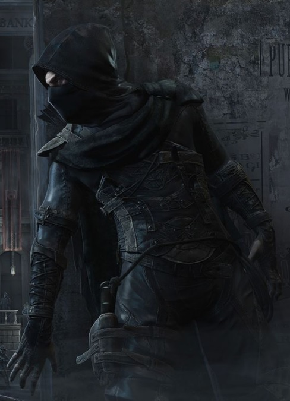

Sessiz ve hızlı hareket kabiliyetleri onları Uzak Diyarlar’ın en tehlikeli suikastçi sınıfı haline getirmiştir. Yakın dövüş tekniklerini büyüyle birleştiren ninjalar, diğer sınıflara göre daha çok taktik oyun yeteneği gerektiren bir sınıftır.
Seviye 1
Hançer: Hançer kullanabilme yeteneğidir.Mızrak: Mızrak kullanabilme yeteneğidir.
Kılıç: Kılıç kullanabilme yeteneğidir.
Omuz: Hasar vermeyi ve düşürmeyi hedefleyen yetenek. Çok etkilidir.Muhakkak pratik edilmesi gerekir. Omuz yiyen karakter 2 tur boyunca yerden kalkamaz ve büyü yapamaz. Omuz atan karakter 2 tur boyunca otomatik dövüşmekten başka birşey yapamaz. Omuz atmaya çalışan kişi yere düşebilir. Uçanlara, çeviklere omuz atmak zordur. Yapılı ve ağır birine omuz atmak bir binaya omuz atmaya benzeyebilir. (omuz
Kapıkırma: Belirtilen yöndeki kapıyı (veya belirtilen isimdeki kapıyı)omuz atarak kırmayı hedefleyen yetenek. (kapıkır
Sıyrılma: Saldırının vuracağı noktadan ayrılma prensibine dayanan tekniktir.Hem saldıran hem de sıyrılmayı deneyen için çeviklik değeri çok önemlidir.Savaşçılar sıyrılma yeteneğinin ustalarıdırlar.(otomatik)
Tekme: Savaşçıların hedeflerine güçlü bir tekme atma yetenekleri. Düşmana geçikme verir.(tekme)
Anımsa: Ait olduğunun dinin tapınağına dönüş komutudur. Seviye 10a kadar geçerlidir. (anımsa)
Tılsımlar: Büyü kullanabilme ile ilgili bir yetenektir.(otomatik)
Seviye 3
Toz atma: Yerdeki tozu-kumu seri bir ayak darbesiyle havalandırarak rakibin gözlerine atmayı hedefleyen, rakibi kısa süreliğine körleştiren yetenek. (toz) Çıplak el: Silahsızken de etkili dövüşebilmeyi sağlayan yetenek. (otomatik)Seviye 8
Çelme: Rakibin bacaklarına hızlı bir vuruş yapılarak onu yere çalmayı amaçlayan yetenek. Başarılı bir çelmenin ardından rakip yere düşer ve 2 tur boyunca kalkamaz. Yere düşen kişinin dövüş becerisi kısmen azalır ve kaçması önlenir. İri cüsseli canlıları yere çalmak kolay olmaz, çevik canlılar ise çelme hamlesini kimi zaman kolayca savuşturabilirler. (çelme)Seviye 9
Hızlı iyileşme: Yaşam puanının daha hızlı yenilenmesini sağlayan yetenek. Bu yetenek yürürken de, dinlenirken de, uyurken de çalışır.(otomatik)Seviye 10
Saklı saptama: Gölgelerin içine saklananları görmeyi sağlayan yetenek.Saklan: Gölgelerin arasına gizlenmek için kullanılır. (saklan)
Seviye 11
Kör dövüşü: Karakterin gözleri görmüyorken de dövüşebilmesini sağlayan yetenek. (otomatik)Seviye 12
Kalkan bloğu: Kurbanın saldırısını kalkanla karşılamak için geliştirilen yetenek. (otomatik)Seviye 14
Meditasyon: Hızlı iyileşmeye benzer. Yöntem olarak uyurken veya dinlenirken zihin yoğunlaşması kullanılır ve büyü gücünün (mana) yenilenmesi sağlanır. (otomatik)Seviye 15
İkili hamle: Dövüşlerde bir turda iki hamle yapabilmek için gerekli yetenek. (otomatik)Seviye 16
Yüksek zarar: Kurbana verilen zararı artırmayı sağlayan yetenek. (otomatik)Seviye 17
Pazarlık: Alışverişlerde alırken ucuza alma, satarken pahalıya satma yeteneğidir. Bu yetenek kullanılarak dükkan sahibi fiyat konusunda ikna edilmeye çalışılır. Hırsızlar pazarlık konusunda doğuştan yeteneklidirler. (otomatik)Seviye 18
Çivi: Düşmanın ayaklarına çivi atarak çevikliğini azaltma yeteneğidir. (çiviYokol: Ninjaların kadim yeteneği. Bu yetenek sayesinde ninja aniden kaybolarak bölgenin bir başka yerinde belirebilir. Kaçmak için idealdir.
Süzül: Süzülmenin saklanmadan farkı gizlice hareket edebilmeyi gerektirmesidir. Bu nedenle süzülmek saklanmaktan çok daha zordur.
Seviye 19
İrfan: Bilgelik vasıtasıyla herhangi bir eşyanın niteliklerini öğrenme yeteneğidir. Tanımlama büyüsüne benzer. (irfanSeviye 20
Dayanım: Büyüye karşı korumayı arttıran yetenek. (dayanım)Seviye 22
El bloğu: Düşmanın saldırısını çıplak elle karşılayabilmeyi sağlayan yetenek.Seviye 23
Silahsızlandır: Rakibin silahını saldırı esnasında yere düşürme yeteneğidir. (silahsızlandır)Seviye 25
Fırlatma: Düşmana mızrak fırlatmayı ya da dövüşürken rakibi fırlatmayı sağlayan yetenek.(fırlat)Seviye 26
Bayıltma: Hedefi bayıltmak için kullanılan yetenek. (bayıltSeviye 28
Körlük tozu: Odada bulunanların gözlerini kör eden bir toz bulutu oluşturmayı sağlayan yetenek. (körlük)Seviye 29
Sinir: Düşmanın vücudundaki belli bölgelere sinir baskıları yaparak zayıflatmayı sağlayan yetenek. (sinir)Seviye 30
Zehir bulutu: Odayı bir zehir bulutuyla kaplamayı sağlayan yetenek. (zehir)Seviye 31
Kalkan yarma: Dövüş sırasında rakibin kalkanını yarmak için kullanılır. (kalkan yarma)Seviye 34
Maymuncuk: Kilitli kapıları anahtarsız açma yeteneğidir.Seviye 35
Silah yarma: Dövüş sırasında rakibin silahını yarma yeteneği. (silah yarma)Seviye 48
Kırbaçla: Silah olarak bir kırbaç kullanırken, kırbacı savurarak düşmanın kaçmasını engelleyecek şekilde zarar verme yeteneği.Dörtlü hamle: Dövüşlerde bir turda 4 hamle yapabilmek için gerekli yetenek.
(otomatik)Seviye 55
Sıvış: Dövüşlerde sıvışabilmeyi sağlayan yetenek. (sıvış)Seviye 58
Kritik vuruş: Kritik vuruşlar yapabilmeyi sağlayan yetenek. (otomatik)Seviye 61
Vuruş ustalığı: Rakibe sersemletici bir güçle vurabilmeyi sağlayan yetenek. (otomatik)Seviye 65
Suikast: Rakibe ani ölüm getirebilen yetenek. Ninjalar yüzyıllardır bu tekniği sır gibi saklarlar. Sessizce yaklaştıkları hedefin boynuna yaptıkları hamle hedefi öldürmezse bile ağır bir darbe almasına neden olur. Bu yeteneği kullanacak ninjanın elleri boş olmalıdır. (suikastSeviye 5
Isı görüşü: Karanlıkta ısı yayan canlıları sezmeye yarar.(büyü ısı)Seviye 8
Cin ateşi: Kurbanı kolay yaralanmasını sağlayan bir aura ile çevreler.(büyü cin düşman_adı)Seviye 9
Körlük tedavi: Hedefin gözlerindeki körlüğü yoketmeyi amaçlayan büyü. (büyü 'körlük tedavi' hedef_adı)Hafif tedavi: İyileştirme büyüsü.(büyü 'hafif tedavi' hedef_adı)
Seviye 11
Hava kontrolü: Havanın durumunu iyileştiren veya kötüleştiren büyü.(büyü hava iyi, büyü hava kötü)Seviye 13
Zırh: Hedef kişiyi korumayı, aldığı darbelerin etkisini azaltmayı amaçlar.(büyü zırh hedef_adı)Seviye 14
Nesne bulma: Bir eşyanın diyarın neresinde bulunduğunu bulmaya yarar. (büyü nesne nesne_adı)Seviye 16
Körlük: Kurbanı kör etmek maksadıyla kullanılır.(büyü körlük düşman_adı)Seviye 18
Ciddi tedavi: İyileştirme büyüsü.(büyü 'ciddi tedavi')Seviye 19
Kalkan: Kişiyi koruyan bir kalkan oluşturan büyü.(büyü kalkan hedef_adı)Seviye 25
Kritik tedavi: İyileştirme büyüsü.(büyü 'kritik tedavi')Seviye 29
Anımsama sözcüğü: Kendi dininin tapınağına dönmeyi sağlayan büyü.(büyü anımsama)Seviye 35
Taş deri: Kişinin derisini bir taş kadar sertleştirerek onu korur.(büyü taş)Seviye 45
Cehennem ateşi: Kurbana zarar veren bir ateş oluşturur.(büyü 'cehennem ateşi' düşman_adı)Seviye 50
Şimşek çağrısı: Ancak açık havada ve kötü havada yapılabilen bu büyü, yakında bulunanlara vuran bir şimşek yaratır.(büyü 'şimşek çağrısı')